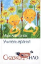

Учитель вранья

`Даю уроки вранья` - такое странное объявление увидит однажды пятилетняя Таська и ее старший брат Тим. Вместе с необычным учителем они переживают множество забавных, но нередко опасных приключений в стране, где король Пузырь боится лопнуть от удивления, где отражения в зеркалах становятся фантастическими существами и где начинаешь понимать, каких чудес на самом деле полон наш, казалось бы, обычный мир. Сказка для детей младшего и среднего возраста известного современного писателя, автора романа `Линии судьбы, или Сундучок Милашевича` (Букеровская литературная премия 1992 года).